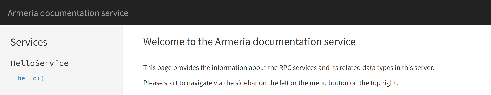
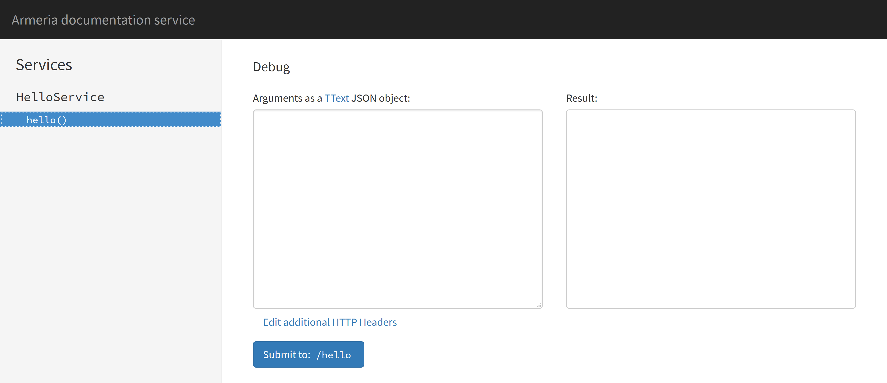

Browsing and invoking services with DocService¶
DocService is a single-page web application which provides the following useful features:
- Browsing the list of services and operations available in the server
- Invoking a service operation from a web form
- Creating a permalink for the invocation you’ve made
First, add DocService to the ServerBuilder:
ServerBuilder sb = new ServerBuilder();
sb.port(8080, "http");
// Add some RPC services.
sb.service("/hello", THttpService.of(new MyHelloService());
// Add DocService.
sb.serviceUnder("/docs", new DocService());
Server server = sb.build();
server.start().join();
DocService will scan for the supported services when the Server starts up. Open http://127.0.0.1:8080/docs/ in your web browser and you’ll see the following screen:
The left pane of the screen shows the list of the available services and their operations. If you defined
structs, enums or exceptions, they will appear there as well. If you click the hello() operation, the
right pane will show the details of the operation such as the list of the parameters, the return type and
the exceptions which may be thrown:
As you may have noticed, the ‘description’ column is empty. DocService can even show the docstrings you put
into your .thrift or .proto files with a little bit of build configuration. We will visit this later
in this document.
Debug form¶
Now, scroll down the right pane. You’ll find a ‘debug form’ which enables you to send an RPC request in human-friendly JSON format:
Type the request parameters like the following and click the ‘Submit to: /hello’ button:
{
"name": "Armeria"
}
The result pane right next to the text area you entered the JSON request will show the reply in JSON:

The current location of your web browser should be updated like the following:
http://127.0.0.1:8080/docs/#!method/com.example.thrift.HelloService/hello?args=%7B%22name%22%3A%22Armeria%22%7D
Imagine you build a request that reproduces the problem using the debug form and share the URL of the request with your colleagues. It’s way more convenient than traditional workflow for replaying an RPC request.
Sending HTTP headers¶
You may want to send an additional HTTP header such as authorization when sending an RPC request via
a debug form. Click the ‘Edit additional HTTP headers’ link below the text area, and you’ll see another
text area which allows you to specify the HTTP headers you want to add:

Example requests and headers¶
You can specify the example requests and HTTP headers which will be used as the default value of the debug form when building a DocService with a DocServiceBuilder:
import com.linecorp.armeria.common.HttpHeaders;
import static com.linecorp.armeria.common.HttpHeaderNames.AUTHORIZATION;
ServerBuilder sb = new ServerBuilder();
...
sb.serviceUnder("/docs", new DocServiceBuilder()
.exampleHttpHeaders(HttpHeaders.of(AUTHORIZATION, "bearer b03c4fed1a"))
.exampleRequest(new HelloService.hello_args("Armeria"))
.build());
...
By adding examples to DocService, your users will be able to play with the services you wrote without a hassle and thus will understand them sooner and better.
Adding docstrings¶
Configure your build script so that it generates the required metadata file for your .thrift or .proto
files into the specific location in the class path.
For Thrift:
- Use the
--gen jsonoption to generate the.jsonfile that contains the docstrings. - Put the generated
.jsonfile into theMETA-INF/armeria/thriftdirectory.
For GRPC:
Configure the protobuf plugin to generate the
.dscfile that contains the docstrings and put it into theMETA-INF/armeria/grpcdirectory:protobuf { generateProtoTasks { all().each { task -> task.generateDescriptorSet = true task.descriptorSetOptions.includeSourceInfo = true task.descriptorSetOptions.includeImports = true task.descriptorSetOptions.path = "${buildDir}/resources/main/META-INF/armeria/grpc/service-name.dsc" } } }